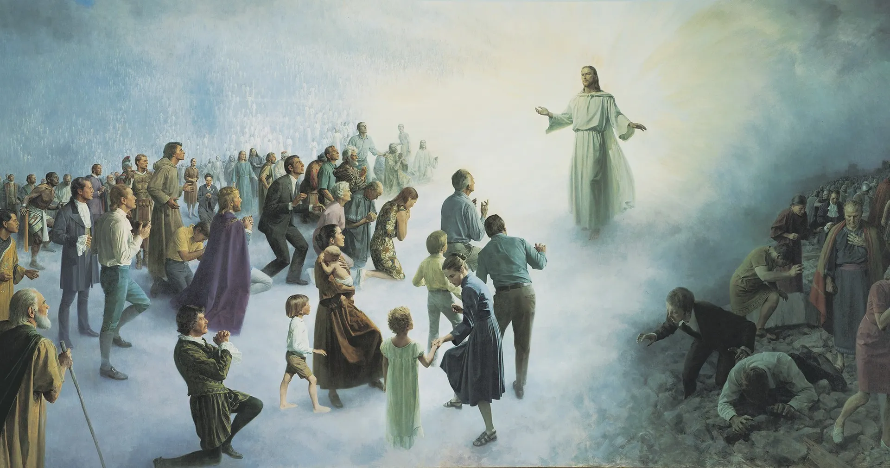

Judgment
"And it is requisite with the justice of God that men should be judged according to their works; and if their works were good in this life, and the desires of their hearts were good, that they should also, at the last day, be restored unto that which is good."
---Alma 41:3-4
The Fairest Judgment
"Wherefore, we shall have a perfect knowledge of all our guilt, and our uncleanness, and our nakedness; and the righteous shall have a perfect knowledge of their enjoyment, and their righteousness, being clothed with purity, yea, even with the robe of righteousness. And it shall come to pass that when all men shall have passed from this first death unto life, insomuch as they have become immortal, they must appear before the judgment-seat of the Holy One of Israel; and then cometh the judgment, and then must they be judged according to the holy judgment of God." (2 Nephi 9:14-15)
Who will be judging us?
"Wo unto such, for they are in danger of death, hell, and an endless torment. I speak it boldly; God hath commanded me. Listen unto them and give heed, or they stand against you at the judgment-seat of Christ" (Moroni 8:21).
Heavenly Father has given the keys of judgment to His like son Jesus Christ. Therefore, we will be judged by Jesus Christ. He will according to our hearts and thoughts judge us. However, He still gave us a path to become better and more like Him, so we can be judged as a righteous man. That path is through the atonement of Jesus Christ to be clean again. His atonement can help us become stronger, avoid temptation, and overcome our weaknesses. Just like the Lord declared, “This is my work and my glory—to bring to pass the immortality and eternal life of man.”
Now is the time because we running out of time!
"Prepare your souls for that glorious day when justice shall be administered unto the righteous, even the day of judgment, that ye may not shrink with awful fear; that ye may not remember your awful guilt in perfectness, and be constrained to exclaim: Holy, holy are thy judgments, O Lord God Almighty—but I know my guilt; I transgressed thy law, and my transgressions are mine; and the devil hath obtained me, that I am a prey to his awful misery." (2 Nephi 9:46)